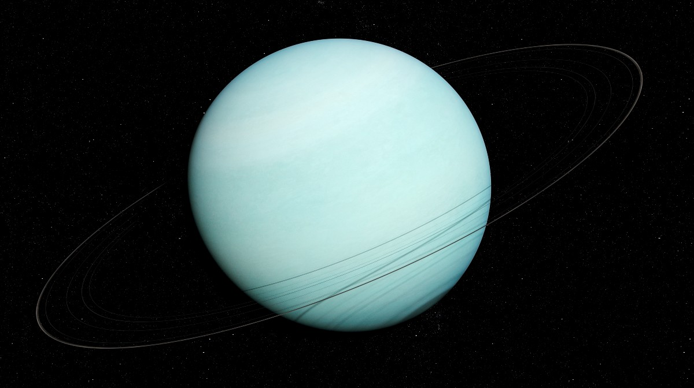

Planetas gaseosos
Júpiter

Júpiter es 11 veces más grande que la Tierra. Tiene un diámetro de 139.822 km. Sin embargo, no se trata de un planeta rocoso, sino que está constituido principalmente por gases y fluidos como hidrógeno y helio. Su atmósfera es muy turbulenta, y posee distintas bandas de nubes de colores, como la Gran Mancha Roja, que es una tormenta gigante que ha estado activa durante al menos 400 años.
Júpiter tiene 79 lunas reconocidas, aunque podría poseer más. Entre ellas, están las cuatro lunas galileanas, muy distintas entre sí, y con características que atraen mucho a la comunidad científica. Incluso, se especula sobre la posibilidad de vida en el océano subsuperficial que se extiende bajo la capa de hielo de su superficie.
Los días en Júpiter duran solo 10 horas, y el planeta tarda 11,86 años terrestres en completar una vuelta alrededor del sol. El campo magnético de Júpiter es 20.000 veces más fuerte que el de la Tierra, el más poderoso de todos los planetas del sistema solar. Su gravedad es 2,5 veces más fuerte que la de la Tierra.
Caracteristicas
- Júpiter es el planeta más grande de nuestro sistema solar. En realidad, tiene más del doble de la masa combinada de los demás planetas de nuestro sistema solar.
- Júpiter es un gigante gaseoso. Está compuesto principalmente de hidrógeno y helio.
- Júpiter tiene una atmósfera muy densa.
- Júpiter tiene anillos, pero son muy difíciles de observar.
- La Gran Mancha Roja de este planeta gigante es una tormenta centenaria más grande que la Tierra.
- Júpiter es conocido desde la antigüedad porque se puede ver fácilmente a simple vista. No se necesita ningún equipo especial.
Saturno

Saturno es también un planeta gaseoso, como Júpiter. Es el segundo más grande del sistema solar. Posee anillos muy vistosos que están compuestos principalmente de hielo y roca. Es el único planeta del sistema con esta característica. La atmósfera de Saturno está compuesta de hidrógeno (96%) y helio (3%), con pequeñas cantidades de otros gases, como metano y amoníaco. Posee patrones de nubes, que incluyen bandas y zonas oscuras, así como una gran mancha blanca en el polo sur. En Saturno hay más de 80 lunas conocidas orbitando a su alrededor, incluyendo Encélado, que tiene géiseres que emiten agua y otros materiales, y la luna más grande del sistema solar, Titán. Saturno tarda 29,46 años terrestres en dar la vuelta alrededor del Sol.
Caracteristicas
- Es un gigante de gas, como Júpiter. Está compuesto por hidrógeno y helio, sobre todo.
- Tiene una atmósfera densa.
- Cuenta con un precioso grupo de siete anillos separados por espacio entre ellos.
- Un día solo dura 10,7 horas.
- Su año equivale a 29 años en la Tierra.
- Saturno tiene 146 lunas que conocemos hasta ahora.
Urano
Urano está compuesto principalmente por hielo de agua, amoníaco y metano. Su temperatura media es de -205,2 ºC. En su atmósfera hay, sobre todo, hidrógeno y helio, además de pequeñas cantidades de metano. Tiene una órbita sumamente larga y lenta que tarda 84 años terrestres en completar una vuelta alrededor del sol. Este ha sido el motivo que llegó a confundir a los astrónomos sobre si se trataba de un planeta o no. El eje de rotación de Urano es muy particular respecto al resto de los planetas del sistema solar: está casi en un ángulo recto con respecto al plano de su órbita. Esto significa que sus polos están orientados hacia el Sol en lugar de su ecuador, lo que da lugar a estaciones extremas y una compleja dinámica atmosférica.
Caracteristicas
- Está rodeado por 13 anillos.
- Es un gigante de hielo, en lugar de un gigante de gas. Está compuesto, en su mayor parte, por hielo fluido sobre un núcleo sólido.
- Tiene una atmósfera densa hecha de metano, hidrógeno y helio.
- Es el único planeta que rota de lado.
- Da vueltas en la dirección contraria a las de la Tierra y de la mayoría de los planetas.
- Un día dura un poco más de 17 horas. 17 horas y 14 minutos, para ser exactos.
- Un año equivale a 84 año en la Tierra.
Neptuno

Neptuno es el planeta más alejado del Sol. Tarda 165 años terrestres en completar su larguísima órbita. Es un planeta helado de un diámetro aproximado de 49.500 km, compuesto principalmente de hidrógeno y helio, con pequeñas cantidades de metano y amoníaco en su atmósfera, que es muy activa. Posee los vientos más rápidos del sistema solar, que alcanzan velocidades de hasta 2.000 km/h. La temperatura en la parte superior de su atmósfera es muy fría, de alrededor de -218 °C. Neptuno tiene un sistema de anillos débiles, al igual que Urano. El día en Neptuno dura 16 horas. Posee 14 lunas conocidas.
Caracteristicas
- Está rodeado por seis anillos.
- Como Urano, es un gigante de hielo. Es parecido a un gigante de gas. Está hecho de una espesa mezcla de agua, amoniaco y metano sobre un centro sólido del tamaño de la Tierra.
- Tiene una atmósfera densa y ventosa.
- Un día dura 16 horas.
- Su recorrido alrededor del Sol es tan largo que tarda 165 años terrestres en completarlo
- Tiene 16 lunas.
LEER MÁS